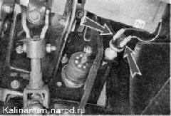

Свободный ход педали тормоза - регулировкаСвободный ход педали тормоза — это ход педали от ее верхнего положения до начала срабатывания тормозных механизмов. Он должен составлять 3—5 мм. Регулировка 1. Подготавливаем автомобиль к выполнению работы. 2. Измеряем свободный ход педали тормоза . Если величина свободного хода не соответствует требуемой, регулируем ее положение. 3. Снимаем колодки проводов с выводов выключателя сигналов торможения. 
4. Рожковым ключом на 19 мм ослабляем затяжку контргайки выключателя. Выключатель сигналов торможения одновременно является упором педали тормоза в ее верхнем положении. Чтобы уменьшить свободный ход, наворачиваем контргайку на выключатель и заворачиваем выключатель в пластину кронштейна. Чтобы увеличить свободный ход — выворачиваем выключатель из пластины на несколько оборотов и затягиваем контргайку.
5. Нажав несколько раз педаль тормоза, проверяем работу сигналов торможения. При необходимости регулировку повторяем. |